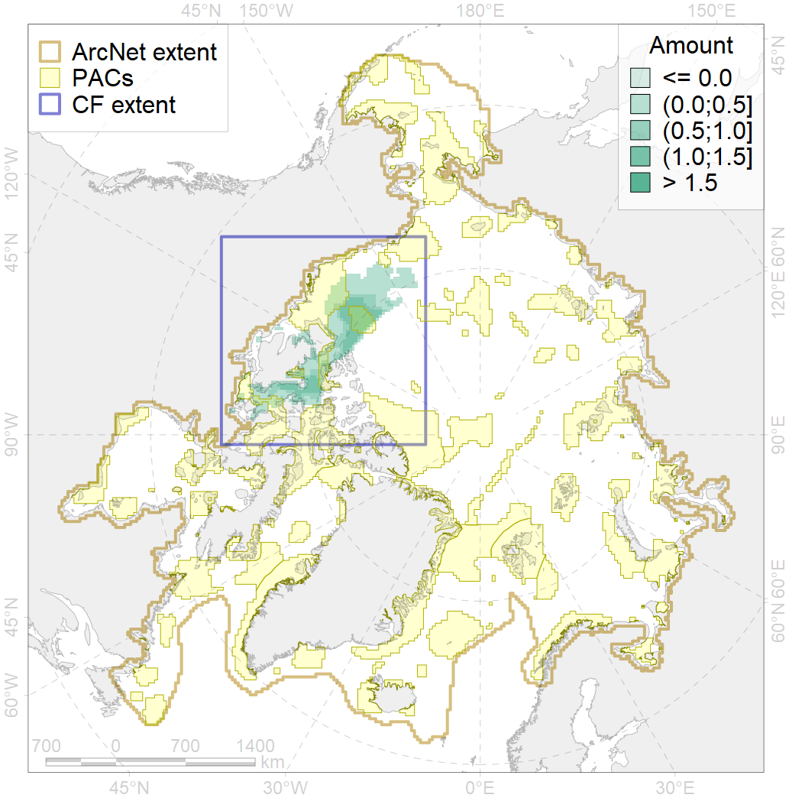
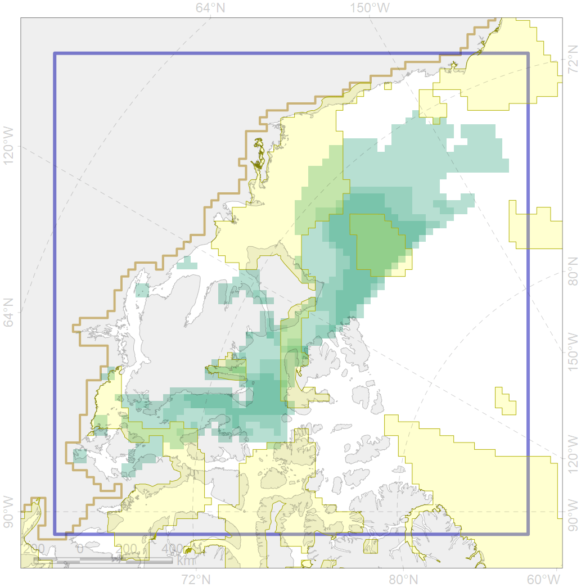

3050

| CF code | 3050 |
| CF name | Multiyear Ice distribution in September in the Beaufort Sea LME |
| Time Period | 1979 - 2017, adopted for recent changes |
| Source(s) | Lavielle M. 1999. Detection of multiple changes in a sequence of dependent variables. Stochastic Processes and their Applications, 83(1): 79–102. doi:10.1016/S0304-4149(99)00023-X. |
| Seasonality | September |
| Depth Horizon | Sea level (0m) |
| Methodology | Lavielle M. 1999. Detection of multiple changes in a sequence of dependent variables. Stochastic Processes and their Applications, 83(1): 79–102. doi:10.1016/S0304-4149(99)00023-X. |
| Use Restrictions | Joined terms of data licenses, copyrights, restrictions, terms of use, disclaimers, etc. No additional terms from data contributor. |
| Author Name | Nikita Platonov |
| Notes | |
| Scenario’s Target | 0.18 |
| Target Achievement | 0.275 (Scenario: 153.0%) |
| PAC | Share of the Total Amount within the PAC | Share of the Target Achievement for the ArcNet | PAC’s Contribution to the Target Achievement |
|---|---|---|---|
| 52 | 0.0% | 0.0% | 0.0% |
| 59 | 15.6%17.2% | 71.6%75.6% | 46.8%49.4% |
| 60 | 0.0%0.0% | 0.0%0.0% | 0.0%0.0% |
| 62 | 3.7%3.7% | 14.8%14.8% | 9.7%9.7% |
| 63 | 4.5%4.5% | 18.2%18.3% | 11.9%12.0% |
| 64 | 1.6%1.7% | 6.7%6.9% | 4.4%4.5% |
| 65 | 0.6%0.6% | 2.4%2.4% | 1.6%1.6% |
| inner | 25.9%27.8% | 113.7%118.0% | 74.3%77.1% |
| outer | 74.1%78.0% | 39.3%53.7% | 25.7%35.1% |
| † supplement values are for area consistence whereas principal values are for Accenter compatible gridded stats |